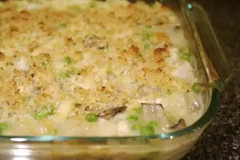

Turkey Tetrazzini

Looking for delicious way to use up leftover turkey? Try this incredible turkey tetrazzini recipe. You can either use store-bought egg noodles or you can make your own. If you have leftover roasted chicken, substitute chicken in place of turkey to make a delicious chicken tetrazzini.
Serves: 8
Time: 60 min
Ingredients
- 5 slices white bread
- 2 tablespoons butter, melted
- 1/8 teaspoon salt
- ⅓ cup Parmesan cheese
- 2 tablespoons butter
- 8 ounces white mushrooms, cleaned and thinly sliced
- 1 medium white onions, chopped fine
- ¼ teaspoon salt, or to taste
- 1/8 teaspoon pepper, or to taste
- 900ml water
- 1 pound spaghetti or fresh egg pasta
- 1 teaspoon salt
- 4 tablespoons butter
- ¼ cup unbleached all-purpose flour
- 2 cups turkey stock or chicken stock
- ¾ cup Parmesan cheese
- 3 tablespoons dry sherry
- 2 teaspoons lemon juice
- 1 teaspoon dried thyme
- 4 cups leftover cooked turkey (or chicken), cut into 1/4-inch pieces
Directions
- Place bread in a food process and grind into fine crumbs. Pour into a small 20x20cm baking dish.
- Melt butter and pour over breadcrumbs. Sprinkle with salt and mix well.
- Bake at 180°C until golden brown and crispy, about 15 minutes. Let cool on a wire rack.
- Once cool, add cheese to breadcrumbs and mix to combine. Set aside.
- Increase oven to 220°C.
- Melt butter in a large skillet over medium heat.
- Sauté mushrooms and onions in skillet, stirring frequently, until fragrant and liquid from mushrooms has evaporated, about 10 to 15 minutes.
- Season with salt and pepper to taste. Transfer to a large bowl and set aside.
- Bring water to a boil in a large stock pot.
- Add salt and pasta to water and cook until al dente, about 10 minutes. Drain and add to bowl with reserved vegetables.
- Melt butter in a small saucepan over medium heat.
- Whisk in flour and cook until flour turns golden, about 1 minute.
- Slowly add turkey or chicken stock, whisking constantly to combine.
- Simmer until mixture thickens, about 5 minutes. Remove from heat.
- Add cheese, sherry, nutmeg, lemon juice, and thyme to béchamel sauce.
- Pour sauce into bowl with the reserved mushrooms, onions, and cooked pasta.
- Add turkey and peas to bowl and mix well to combine.
- Grease a 33x22 baking dish. Pour filling into prepared baking dish.
- Sprinkle breadcrumbs over dish and spread until evenly coated.
- Bake at 220°C until breadcrumbs have browned and filling is bubbly, about 12 to 15 minutes.
- Remove from oven and serve.